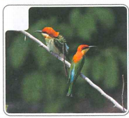
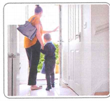
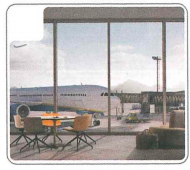
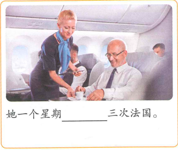
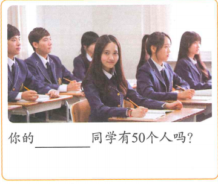
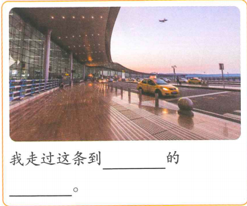
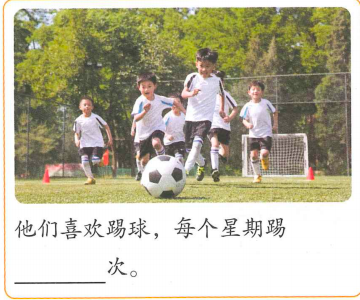

我想再去一次中国
Em muốn đi Trung Quốc một lần nữa
Mục tiêu: nghe hiểu và thảo luận kế hoạch du lịch; dùng bổ ngữ động lượng để diễn đạt số lần; dùng câu chữ “有” (2) để nói đạt tới một số lượng nhất định.
🔥 Khởi động
1. Chọn hình tương ứng: A 路 B 鸟 C 机场 D 出门

A / B / C / D：______
A / B / C / D：______

A / B / C / D：______

A / B / C / D：______
2. Căn cứ vào tình hình thực tế, nói về số lần phát sinh của hành động.
看电影 一个月 ______ 次
去旅游 一年 ______ 次
📚 Từ vựng 1
🎧 Nghe Bài khóa 1
（1）同学们要开始做什么？ A 学习 B 考试 C 跑步
（2）白家月去过几次中国？ A 一次 B 两次 C 七次
💬 Bài khóa 1
（1）那个人穿着什么？
（2）那个人是来找谁的？
🧠 Bổ ngữ động lượng (1)
“Số từ + 次” đặt sau động từ để tạo thành bổ ngữ động lượng, biểu thị số lần xảy ra của động tác. Khi tân ngữ là tên người hoặc địa danh, có thể đặt trước hoặc sau bổ ngữ động lượng.
安妮去过一次北京。
李文见了杨同乐两次。
Hoàn thành hội thoại:
（1）A：你去过 ______ 上海，觉得怎么样？ B：很不错，吃得好，玩得好。
（2）A：安妮来过 ______ 我们家，她知道怎么走。 B：好，我跟安妮一起过去。
（3）A：你吃过北京烤鸭吗？ B：我吃过 ______，很好吃。
📚 Từ vựng 2
🎧 Nghe Bài khóa 2
（1）白家月要去哪儿？ A 北京 B 学校 C 同学家
（2）李文的高中同学在哪儿工作？ A 饭店 B 电影院 C 颐和园
💬 Bài khóa 2
（1）杨同乐来了，王一飞高兴吗？
（2）王一飞是怎么给他们介绍的？
🧠 Bổ ngữ động lượng (2)
Khi động từ vừa mang bổ ngữ động lượng vừa mang tân ngữ, nếu tân ngữ là danh từ chỉ sự vật thì thường đặt sau bổ ngữ động lượng; nếu tân ngữ là đại từ thì đặt trước bổ ngữ động lượng.
我想找他一次。
安妮来过这儿两次。
Hoàn thành hội thoại:
（1）A：你们去北京的时候见到小雪姐姐了吗？ B：我们见了 ______ 两次，还去了一次她家。
（2）A：______？ B：我每个星期给家里打两次电话。
（3）A：______？ B：就下过一次雪。我觉得今年没有去年冷。
📚 Từ vựng 3
🎧 Nghe Bài khóa 3
（1）李文多长时间没回国了？ A 一年 B 六个月 C 不到一年
（2）白家月这次买的机票怎么样？ A 很贵 B 很便宜 C 有点儿贵
💬 Bài khóa 3
（1）王一飞家楼下住着什么人？
（2）杨同乐要请楼下的人做什么？
🧠 Câu chữ “有” (2)
“有 + cụm từ chỉ số lượng” biểu thị sự việc đạt đến một số lượng nhất định.
你女儿今年有10岁了吗？
我有一个月没给家里打电话了。
Hoàn thành hội thoại:
（1）A：飞北京的机票 ______ 8000块钱吗？ B：没有，现在机票便宜。
（2）A：你男朋友 ______？ B：没有，他今年29岁，比我还小一岁呢。
（3）A：我们两个 ______？ B：是啊，一年没见，你还是那样。
📚 Từ vựng 4
📖 Bài khóa 4
（1）李文经常回北京，所以不想家。 （ ）
（2）李文、白家月跟鸟一起回北京。 （ ）
（3）李文坐什么时候的飞机？ A 星期五 B 星期六 C 星期天
（4）白家月要做什么？ A 回国 B 去北京 C 去朋友家
✏️ Bài tập tổng hợp
Chọn: A 出国 B 姓名 C 门票 D 鸟 E 机票
（1）你看，那只小 ______ 多漂亮啊！
（2）我记得这里的 ______ 不到10块钱，现在怎么这么贵了？
（3）儿子就要 ______ 上大学了，你给他准备了什么东西啊？
（4）A：你买的是什么时候的 ______？ B：明天早上的，下午就到北京了。
（5）A：请您说一下他的 ______，我看看有没有这个人。 B：王大明。
🖼️ Điền từ theo tranh
Sử dụng từ ngữ và điểm ngôn ngữ đã học trong bài để điền vào chỗ trống.

她一个星期 ______ 三次法国。

你的 ______ 同学有50个人吗？

我走过这条到 ______ 的 ______。

他们喜欢踢球，每个星期踢 ______ 次。
🎭 Hoạt động trên lớp
Hoạt động theo nhóm hai người: Trò chuyện về trải nghiệm du lịch, giới thiệu đã đi những nơi đâu, đi mấy lần, ăn uống thế nào, vui chơi ra sao và cảm nhận về chuyến đi. Cố gắng sử dụng tối đa từ ngữ và điểm ngôn ngữ đã học trong bài.
B：去过。
……
🎯 Tổng kết Bài 15
✓ Câu tồn hiện với “着”.
✓ Phó từ chỉ mức độ “多” trong câu cảm thán.
✓ Bổ ngữ xu hướng kép.
✓ Từ trọng tâm: 站、包、过年、没意思、位、前面、房子、小孩儿、女孩儿、姓、眼睛、跳舞.